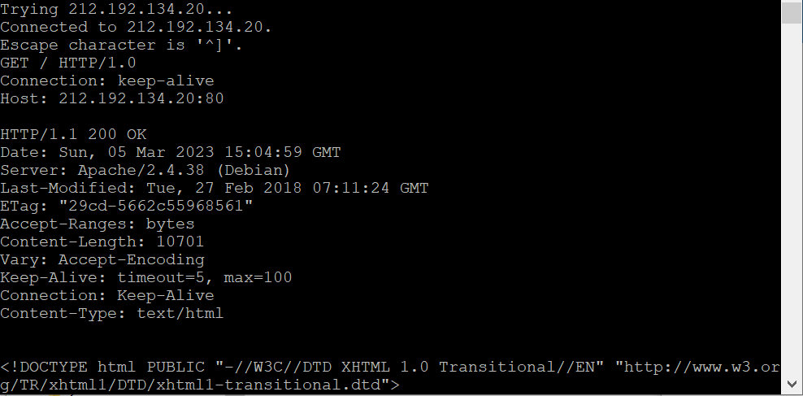
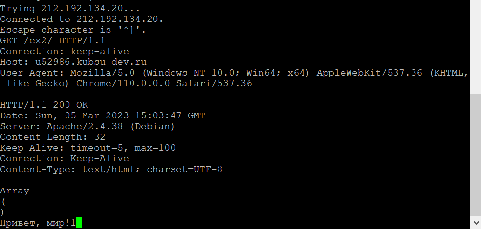
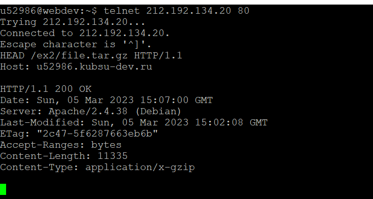
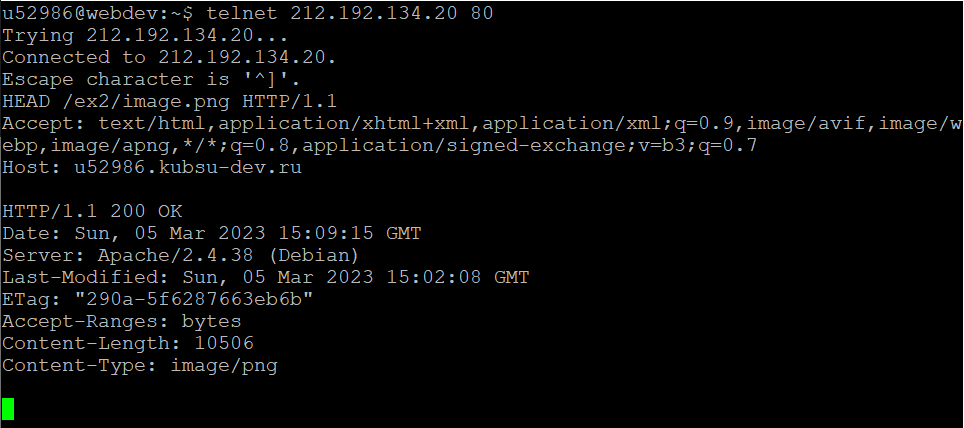
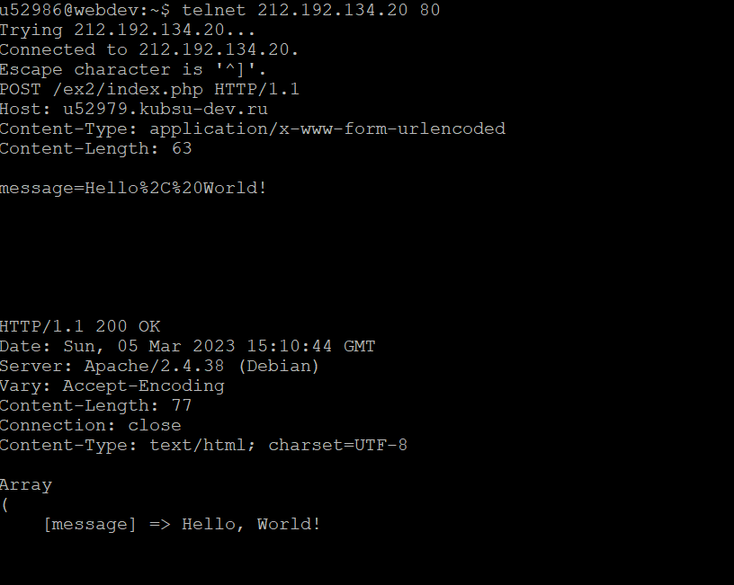
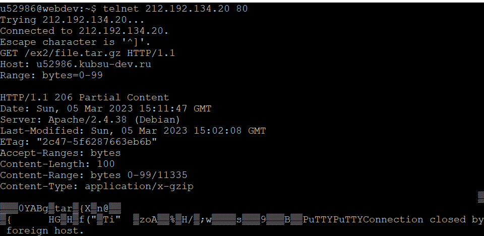
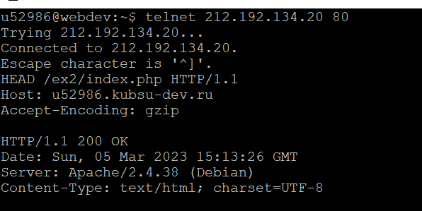

1.

Делаю GET запрос в HTTP 1.0 (обеспечивает только рудиментарную аутентификацию (управление вызовами и ответами); Ключевая проблема этого метода заключается в том, что имена пользователей и пароли не шифруются, что делает их уязвимыми для шпионажа, и нет ограничений по времени.) к целевой странице. Использую поле Keep-alive (Постоянное HTTP-соединение) для указания желания клиента сохранить открытое соединение TCP после завершения текущего запроса/ответа
2.

Делаю GET запрос в HTTP 1.1 (подразумевает, что соединение TCP должно оставаться активным, если явно не запрошено разъединение при использовании постоянных соединений.) к внутренней странице в каталоге ex2. Использую заголовок User-Agent для передачи информации об оборудовании отправителя
3.

Делаю HEAD запрос (запрашивает заголовки, идентичные тем, что возвращаются, если указанный ресурс будет запрошен с помощью HTTP-метода GET . Такой запрос может быть выполнен перед загрузкой большого ресурса, например, для экономии пропускной способности.) для получения размера файла. В ответе от сервера получаю Content-Length - размер файла
4.

Делаю HEAD запрос с заголовком Accept для сообщения серверу какие типы данных могут быть приняты. В ответе получаю Content-Type - тип
запрошенных данных
5.

Делаю POST запрос с комментарием. В ответе получаю массив с отправленным комментарием
6.

Делаю GET запрос с заголовком Range для получения первых 100 байт файла
7.

Делаю HEAD запрос для получения информации о файле index.php. Ответ в Content-Type